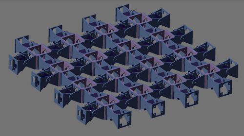

I am planning to further develop the idea of modular mesh robots:
2D topology configurations composed of pitch modules in the x and y axes.
Specifically, I am interested in the locomotion capabilities of these robots.


The basic unit consist of four modules in a cross. It can be seen that there are two pitch-pitch minimum configurations rotated 90 degrees. The locomotion of the minimum configuration has been deeply studied in my Ph. Dissertation. My hypothesis is that applying the same coordination independently to every PP configuration, the locomotion of the robot in the x and y directions can be achieved. And if the two movements are superposed, the locomotion in other directions can also be performed.

This configuration is composed of 2x2 three-module snakes. There are two snakes pointing in the y axis and two in the x. The hypothesis is that Combining the locomotion of these 4 snakes, the movement of the complete robot can be realized.
Here there is a 3x3 four-module snake configuration:

Some questions that arise are:
It seems that you could only combine x, y movements simultaneously if you use the minimum configuration. If you join more, as a first sight seems that the combination of x, y movements is physicaly imposible, except if this is done alternatively (x, then y, then x,..), but it would be better to check it with the simulator 😉
It is clear that there are some constraint and not all the combinations of the x and y snakes are posible… but does it mean that there is no superposition valid at all? Is there any case in which the superposition works? Maybe not… or maybe yes. It has to be studied in detail.
Anyway, it is so exciting to face the unknow! 🙂 I like to be a researcher a lot!
I think multicell is possible but not with the current designs of the modules, it needs to have some more lateral flexibility. In any case, as i told you some years ago, i would be more interested in the 3D robots using the modules as simple and smart Lego blocks 😛